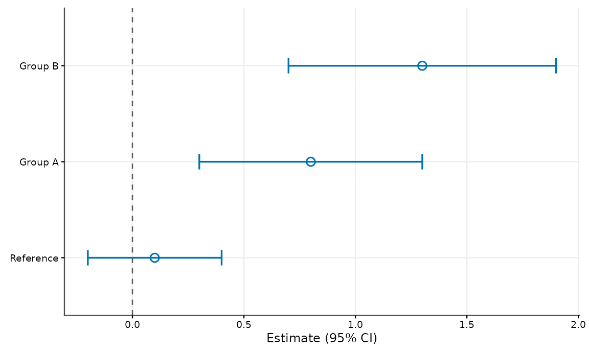
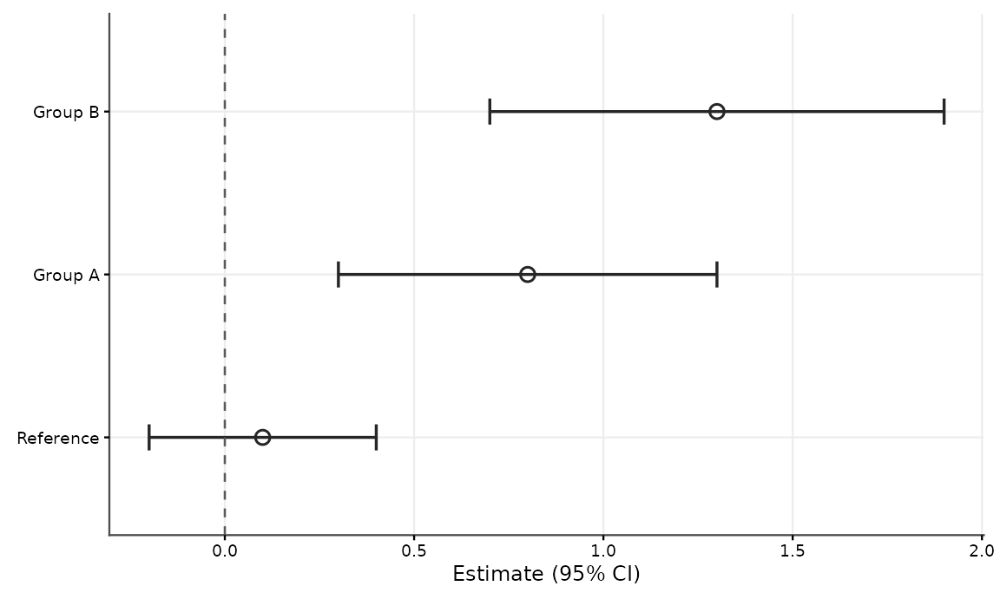
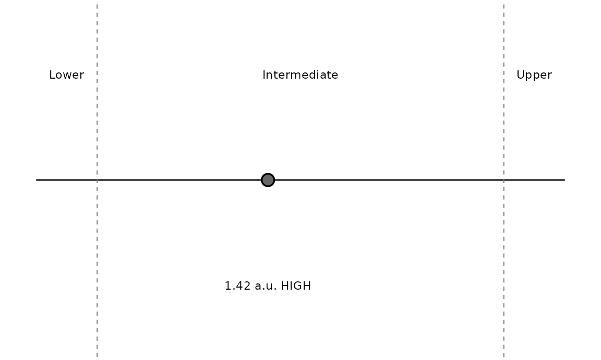
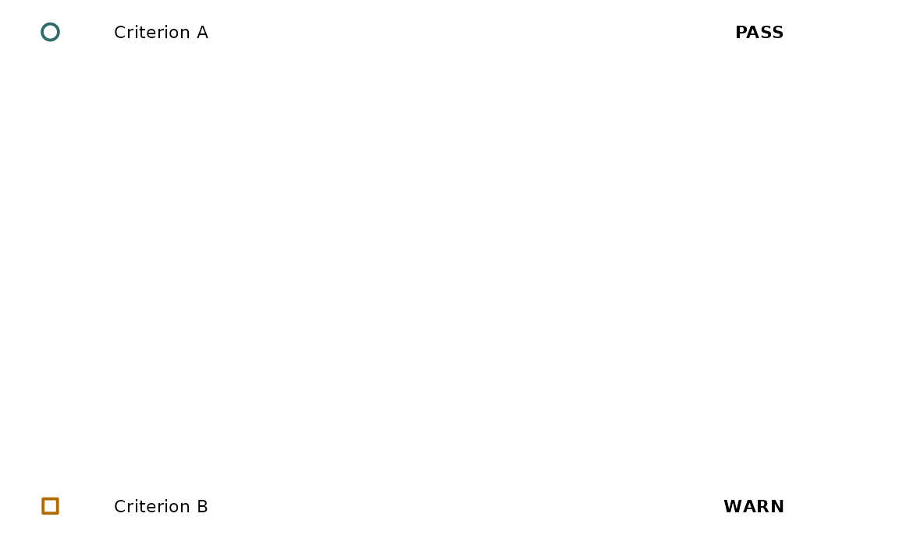

cellreportR uses position first, then shape or line type, then colour. Colour is intentionally redundant for categorical distinctions. The restrained default palette is designed with common colour-vision deficiencies in mind, without a claim of formal accessibility certification.
cellreportR::cr_palette()## blue vermillion bluish_green orange reddish_purple
## "#0072B2" "#D55E00" "#009E73" "#E69F00" "#CC79A7"
## sky_blue yellow grey
## "#56B4E9" "#F0E442" "#999999"
cellreportR::cr_shapes(4)## [1] 21 22 23 24
cellreportR::cr_linetypes(4)## [1] "solid" "dashed" "dotdash" "dotted"
cellreportR::cr_plot_style("grayscale")## $mode
## [1] "grayscale"
##
## $variant
## [1] "publication"
##
## $base_size
## [1] 9
##
## $base_family
## [1] "sans"
##
## $palette
## [1] "#262626" "#5A5A5A" "#777777" "#8D8D8D" "#A0A0A0" "#B0B0B0" "#BFBFBF"
## [8] "#CCCCCC"
##
## $shapes
## [1] 21 22 23 24 25 1 0 5 2 6
##
## $linetypes
## [1] "solid" "dashed" "dotdash" "dotted" "longdash" "twodash"
##
## $legend_position
## [1] "bottom"
##
## attr(,"class")
## [1] "cr_plot_style"
d <- data.frame(group=factor(c("Reference","Group A","Group B"),levels=c("Reference","Group A","Group B")),estimate=c(0.1,0.8,1.3),conf_low=c(-0.2,0.3,0.7),conf_high=c(0.4,1.3,1.9))
cellreportR::cr_plot_estimates(d,reference=0,colour_mode="colour")
cellreportR::cr_plot_estimates(d,reference=0,colour_mode="grayscale")
cellreportR::cr_plot_result_position(1.42,c(1,2),c("Lower","Intermediate","Upper"),unit="a.u.",classification="HIGH",mode="grayscale")
qc <- cellreportR::cr_report_qc(c("Criterion A","Criterion B"),c("met","review"),c("Configured criteria","Configured criteria"),c("PASS","WARN"))
cellreportR::cr_plot_qc_summary(qc)
Exports have explicit dimensions and a white background, independent of an interactive plotting pane.
cellreportR::cr_save_figure(p,"figure.pdf",size="single")
cellreportR::cr_save_figure(p,"figure-wide.pdf",size="double")
cellreportR::cr_save_figure(p,"figure.tiff",size="double",dpi=600)The style layer does not filter, transform, reorder analytically meaningful values, or select results. Factor levels are respected; explicit ordering is available in estimate plots. More than the reliable number of colours, shapes, or line types produces a warning so callers can prefer facets or direct labels.